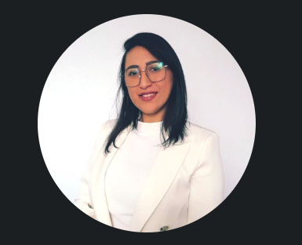

Currículum Vitae

Ruth Núñez
Mi Linkedin
Portafolio
Resumen
Docente con más de 10 años de experiencia en educación, dentro y
fuera del aula, con sólidas prácticas orientadas a resultados y
a la mejora continua.
Profesional que se adapta fácilmente a los cambios,
comprometida, metódica, innovadora y reflexiva.
Se ha desempeñado como profesora de aula, asesora educativa,
académica adjunta de pregrado y educación continua, entre otros.
Habilidades
- Docencia
- Liderazgo Estratétigo
- Gestión de Proyectos
- Planificación estratégica
Formación
Títulos y grados académicos
- Licenciatura en Educación (UMCE, 2014) Chile.
- Pedagogía en Educación Básica con Mención en Lenguaje y Comunicación (UMCE, 2016) Chile.
- Magíster en Desarrollo Curricular y Proyectos Educativos (UNAB, 2023) Chile.
Diplomas y otros estudios
- Diplomado en Diseño e Innovación Curricular (UNAB, 2021) Chile.
- Diplomado en Aprendizaje Basado en Competencias Para el Contexto Escolar (Universidad de Deusto, 2022) España.
- Diplomado en Evaluación Educacional (UNAB, 2022) Chile.
- Diplomado en Gestión y Proyectos Educativos (UNAB, 2022) Chile.
- Curso Universitario en Innovación Curricular y proyectos Educativos (Universidad de Deusto, 2022) España.
- Curso Universitario en Innovación en Docencia Universitaria (Universidad de Deusto, 2022) España.
Experiencia Laboral
- Asesora Educativa para el programa "A Convivir se Aprende" UNAB-MINEDUC (julio 2023 a la fecha).
- Docente Adjunta de Pregrado UNAB (marzo 2023 a la fecha).
- Docente Adjunta en Educación Continua UNAB (mayo 2022 a la fecha).
- Jefa de Paralelo. Fundación Socedhuca (diciembre 2019 a febrero 2022).
- Jefa de Departamento de Lenguaje. Fundación Socedhuca (marzo 2018 a febrero 2022).
- Docente de Lenguaje y Comunicación. Fundación Socedhuca (junio 2016 a febrero 2022).
- Diseñadora de material de apresto para la lectura y escritura. Kidslearning (noviembre 2013 a junio 2016).